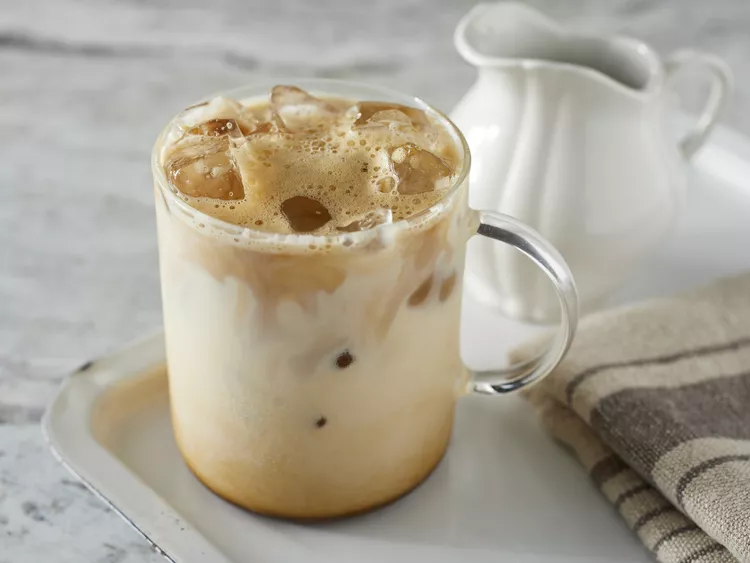

Go back Home
Carbonara

Learn how to make iced coffee with this iced coffee recipe! We use instant coffee in this cheater-version of iced cappuccino that's very easy to make, and very nice to drink!
What is Iced Coffee?
Iced coffee is any coffee beverage served cold.
ingredients
- 3 tablespoons warm water
- 2 teaspoons instant coffee granules
- 1 teaspoon sugar
- 1 cup ice or as needed
- 6 fluid ounces cold milk
Steps
-
Step 1
Gather all ingredients
-
Step 2
Combine warm water, instant coffee, and sugar in a sealable jar. Seal and shake until foamy
-
Step 3
Pour into a glass full of ice; add milk. Adjust to taste if necessary